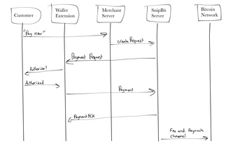

SnipBit
A bitcoin micropayment monetization platfom for digital content and an interesting startup experience which began as a submission to the 2015 borderless block party hackathon (3rd place).
Code
Unfortuntely the code is no longer available, but check out the devpost page and the demo video!
Tools
NodeJS, VanillaJS, HTML/CSS
Story
This began when my interest in Bitcoin and blockchain tech lead to me to this month-long online hackathon. In this hackathon, I joined a person set on building a micropayment platform for online content producers. Essentially, we wanted to realize the promise of micropayments that digital currency evangelists had made. The platform ended up as an API accessed through a chrome extension (see demo video), both of which I built. After placing third in the hackathon we decided to develop this further which culminated in a presentation to the venture capital firm Boost VC. Unfortunately, we were turned down by Boost VC, but it was a seriously insightful experience for me as a junior in high school.
At a Glance
Application Flow:
